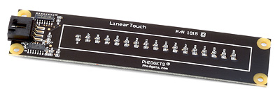
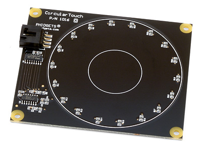
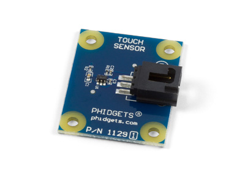

Linear Touch

Product Features
This touch sensor recognizes both contact and proximity and can be used as a slider or a series of buttons. Connects directly to a USB port.
Product Description
The LinearTouch detects changes in the capacitance between the on-board electrodes and the object making contact. The side of the circuit board opposite the connector and components is the side intended for contact.
The sensor can be mounted behind a sheet of glass or plastic; The recommended thickness is 1/8 inch. Use Silicon adhesive when attaching the material; standing the LinearTouch off or creating space between the separation material and the Phidget can cause false-triggering to occur. Materials thicker than 1/8” may work, but will require a larger surface area of contact to ensure proper triggering (i.e.: two fingers instead of one).
Sliding a finger along the touch sensor varies the Analog Input 0 value from 0 to 1000 in approximately 125 discrete steps. When the finger is removed, the final measured value is retained. Two Digital Inputs are used to convey additional information: Digital Input 0 is True when contact is made with the Phidget, and Digital Input 1 is True when a finger or object comes in close proximity to the board. The Analog Input value is valid when both Digital Inputs are true.
Circular Touch

Product Features
This touch sensor recognizes both contact and proximity and can be used as a scroll wheel or a series of buttons. Connects directly to a USB port.
Product Description
The Circular Touch detects changes in the capacitance between the on-board electrodes and the object making contact. The side of the circuit board opposite the connector and components is the side intended for contact.
The sensor can be mounted behind a sheet of glass or plastic; The recommended thickness is 1/8 inch. Use Silicon adhesive when attaching the Phidget to the material; standing the PhidgetCircularTouch off or creating space between the separation material and the Phidget can cause false-triggering to occur. Materials thicker than 1/8” may work, but will require a larger surface area of contact to ensure proper triggering (i.e.: two fingers instead of one).
Sliding a finger along the touch sensor varies the Analog Input 0 value from 0 to 1000 in approximately 125 discrete steps. When the finger is removed, the final measured value is retained. Two Digital Inputs are used to convey additional information: Digital Input 0 is True when contact is made with the Phidget, and Digital Input 1 is True when a finger or object comes in close proximity to the board. The Analog Input value is valid when both Digital Inputs are true.
Touch Sensor

Product Features
Detect a touch through up to 1/2" of glass or plastic with this low-cost capacitive sensor.
Product Description
The sensor is a capacitive touch sensor and can detect a touch through plastic, glass, or paper. We recommend a material thickness of up to 1/2”.
The sensor can work as a close proximity sensor, sensing objects at a distance of up to 1/2” from the board in all directions without direct contact.
On the bottom side of the Touch Sensor there is a small exposed metallic pad. A soldered connection can be made to the pad to increase the size and dimensions of the touchable area, such as attaching the sensor to a metallic object or some wire.
This sensor is designed to be 3.3V compatible and can interface with other products as an alternative. For example, the Java based Sentilla Perk includes side ports that are compatible with 3.3V sensors without any modifications.
This particular revision of the sensor has a new sensing chip that recalibrates after 45 seconds of contact (as opposed to 60 seconds on the previous revision). Other than that, this sensor will function the same as its predecessor.
We Provide:
- To be accessible, friendly, and helpful at all times.
- To answer the phone when you call, 24/7/365.
- Reply to your emails and support tickets within 24 hours.
- To provide timely information about new hardware.
- To provide all design documentations.
Please fulfill following request form to get more information!